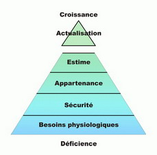

C. Distinguons
Nous avons tendance à regrouper un grand nombre d’expériences, pas toujours pertinentes, sous le concept de besoin. Par exemple, nous incluons les caprices, les désirs, les pulsions, les préférences, les envies, les goûts, les manques, les nécessités, les droits, les rêves, les aspirations ainsi que des objectifs, des demandes et des exigences.
Pour nous y retrouver, il faut y mettre de l’ordre. Celui-ci peut prendre la forme d’une typologie (une grille théorique qui permet de situer les divers besoins les-uns par rapport aux autres) ou la forme d’une conception qui identifie les dimensions les plus importantes à considérer. Commençons par la recherche d’une typologie déjà définie.
Quelques typologies
Les psychologues ont créé quelques théories pour mettre de l’ordre dans cette dimension de notre expérience. Je vais rappeler brièvement trois théories qui m’apparaissent particulièrement importantes d’un point de vue humaniste.
La hiérarchie des besoins de Maslow
Cette théorie est importante pour comprendre le fonctionnement de la tendance actualisante. Son principe essentiel est simple : les besoins les plus fondamentaux sont liés à la survie (motivation de déficience) alors que les besoins les plus évolués se rapportent à la satisfaction et à l’épanouissement personnel (motivation de croissance). Les besoins plus fondamentaux ont toujours préséance sur ceux qui sont plus évolués (on comprend facilement qu’il faut survivre pour que l’épanouissement soit une préoccupation pertinente).  Voici une représentation schématique de cette conception qui a connu un grand succès dans plusieurs sphères de l’activité humaine (éducation, marketing, gestion, nursing, etc.) en plus de la psychologie.
Les besoins physiologiques (manger, boire, respirer, etc.) sont directement liés à la survie. Ils doivent recevoir un minimum de satisfaction pour que la personne reste vivante. Tout déficit à cet égard devient vite une priorité. Les besoins liés à la sécurité (stabilité, ordre, limites, protection, etc.) sont également très directement reliés à la survie, même s’ils ne sont pas d’ordre physique).
Les deux niveaux suivants relèvent de la vie sociale et concernent plus directement la recherche de satisfaction. Les besoin d’appartenance (amour, amitié, relations affectueuses et faire partie d’un groupe) précèdent les besoins liés à l’estime (respect, attention, appréciation des autres, estime de soi, compétence, liberté, etc.). Dans les deux cas, l’enjeu n’est plus la survie physique, mais la satisfaction, la santé et la vitalité psychique.
Contrairement aux autres genres, le besoin d’actualisation n’est pas ressenti à partir d’un manque. En fait, il s’agit ce type de besoin tend à grandir lorsqu’on le satisfait. C’est le désir d’exploiter son potentiel au maximum, la recherche d’harmonie, de vérité, de justice, de sens, d’unicité, de créativité, etc. Une quête qui, lorsqu’on l’entreprend, devient souvent interminable.
Continuons notre expérience précédente
- Reprenez la liste de besoins que vous avez faite un peu plus tôt et essayez de les classer dans les catégories de Maslow. Il s’agit de déterminer à quel niveau appartient chacun. Inscrivez M1 à M5 selon votre conclusion en regard de chaque besoin de votre liste.
- M1 - Besoins physiologiques
- M2 - Besoin de sécurité
- M3 - Besoin d’appartenance
- M4 - Besoin d’estime
- M5 - Besoin d’épanouissement
- Faites ceci avant de continuer votre lecture.
|
Les besoins interpersonnels selon Schultz
La théorie FIRO (Fundamental Interpersonal Relationship Orientation) de William Schultz cherche à identifier les besoins qui amènent les humains à entrer en relation avec les autres. Elle distingue trois genres : les besoins d’inclusion, de contrôle et d’affection. Chacun de ces types de besoins existerait chez chaque personne, mais l’importance relative de chacun serait différente d’un individu à l’autre. C’est ce qui permet de définir des groupes de personnes en fonction du type de besoins qu’elles cherchent principalement à satisfaire dans leurs relations.
Le besoin d’inclusion est celui qui nous pousse à nous associer à un groupe, à chercher à faire partie d’un ensemble de personnes, à être membre reconnu d’une collectivité. Le besoin de contrôle est celui qui nous amène à tenter d’influencer les personnes avec lesquelles nous sommes en contact, à vouloir faire une différence dans notre environnement, à vouloir avoir notre mot à dire dans ce qui se passe. Le besoin d’affection nous pousse à établir des relations privilégiées, caractérisées par l’intimité et la chaleur. C’est le besoin d’aimer et d’être aimé tel qu’il s’applique à nos conjoints, nos enfants et nos amis intimes.
Il semble qu’une hiérarchie relie également ces trois groupes de besoins. Le besoin d’inclusion serait le premier à se manifester et le plus essentiel à une vie saine. Le besoin de contrôle viendrait ensuite lorsque le premier est raisonnablement satisfait et le besoin d’affection viendrait en dernier parce qu’il suppose une plus grande maturité de la personne ou de la relation. Les trois types de besoins seraient reliés aux stades du développement de l’enfant identifiées par Freud (oral, anal, phallique).
Continuons notre expérience
- Vous l’avez sans doute deviné : vous devez maintenant classer les besoins de votre liste en fonction de la conception de Schultz. Servez vous du code S1 à S3 pour inscrire votre opinion.
- S1 - Besoin d’inclusion
- S2 - Besoin de contrôle
- S3 - Besoin d’affection
- Classez chaque besoin de votre liste maintenant.
|
Les types de transferts selon Larivey
Michelle Larivey distingue trois genres de relations transférentielles. Chaque type est défini par la conquête d’une capacité, celle de vivre librement une dimension de sa vie psychique afin de satisfaire la besoin fondamental qu’elle contient. (Voir Le défi des relations.)
Le droit à l’existence est lié au besoin d’être aimé sans avoir à le mériter par une performance quelconque. Le fait d’être accueilli dans l’existence par un parent bienveillant constitue le modèle de cette satisfaction. Une expérience de cette nature permet à la personne d’aborder l’univers en ayant la conviction qu’elle est aimable et qu’elle mérite d’être traitée avec amour.
Le droit à une identité distincte est lié au besoin d’affirmation et d’autonomie. Il concerne la capacité de s’affirmer comme un être distinct sans perdre l’amour des personnes auxquelles on est lié. Le prototype de cette satisfaction serait l’appréciation d’un parent pour nos initiatives et notre performance, y compris lorsque nos choix sont différents de ceux que le parent aurait faits. C’est le droit d’être soi-même et de s’estimer comme tel qui constitue l’enjeu essentiel de cette conquête.
Le droit à une identité sexuelle est lié au besoin d’aimer et d’être aimé en tant qu’être adulte sexué. L’enjeu est l’estime de soi en tant que partenaire sexuel et amoureux. Le fait d’être apprécié en tant qu’homme ou femme désirable par son parent de sexe opposé est le modèle fondamental de la réponse adéquate à ce besoin, pourvu que l’attrait soit exprimé de façon respectueuse et ne soit pas caché à l’autre parent (ou au conjoint). Le droit d’avoir une vie sexuelle et amoureuse pleinement satisfaisante est le résultat de cette conquête réussie.
Comme dans les deux conceptions précédentes, ces niveaux de transfert sont hiérarchisés. Ils le sont d’une façon assez particulière : la résolution de chacun s’appuie sur la conquête du précédent. L’identité distincte implique qu’on prenne le risque de perdre la relation accueillante qui apportait le droit à l’existence ; elle sort des zones connues et rassurantes pour explorer de nouvelles possibilités plus conflictuelles. De même, l’identité sexuelle s’appuie sur le droit d’être un individu distinct, mais elle vient compliquer la situation en impliquant directement de nouveaux partenaires en plus des deux parents à la fois et de façon complémentaire.
Poursuivons encore notre expérience
- Vous devez classer les besoins de votre liste en les reliant aux trois types de transfert proposés par Larivey. Le code L1 à L3 vous permettra de noter facilement vos conclusions.
- L1 - Droit à l’existence
- L2 - Identité distincte
- L3 - Identité sexuelle
- Classez chaque besoin de votre liste avant d’aller plus loin.
|
Ce qui en ressort
Les trois conceptions ci-dessus s’inscrivent toutes dans le courant humaniste de la psychologie. À ce titre, on peut s’attendre à ce que leur validité soit vérifiable par chaque personne à la lumière de sa propre expérience de vie. Autrement dit, elles doivent rejoindre notre expérience subjective en correspondant à ce que nous vivons. Je crois qu’elles répondent toutes trois à cette exigence ; nous y reconnaissons assez facilement les réalités de notre propre vie.
Les trois conceptions présentent une hiérarchie dans les besoins. Certains besoins doivent être comblés avant que d’autres commencent à occuper le centre de l’attention de la personne. Cette hiérarchie est si importante qu’elle permet de définir le niveau de développement de la personne du point de vue de ses besoins essentiels. Les motivations principales d’une personne à un moment de sa vie permettent de déterminer où elle en est du point de vue de sa croissance. Ses motifs pour entrer en relation avec les autres permettent de déceler la qualité de son développement interpersonnel. De même, les transferts qui se manifestent dans ses relations importantes à une époque particulière de sa vie sont assez caractéristiques pour contribuer à son diagnostic et fournir une vision assez juste du développement de son autonomie personnelle.
Cependant, les trois conceptions ne suffisent pas à répondre aux questions soulevées dans cet article. Elles s’en tiennent à des grandes catégories de besoins sans nous fournir les éléments pour distinguer et évaluer les besoins particuliers.
Par exemple, comment considérer le besoin “que tu m’aides dans la maison”, “que mon patron m’encourage”, “de rire et de me détendre”, “de parler à ma mère”, “d’être apprécié pour la qualité de mon travail”, etc. ? S’agit-il de besoins réels ? Comment distinguer ceux qui ne sont pas des besoins et comment devons-nous les définir ?
|
|